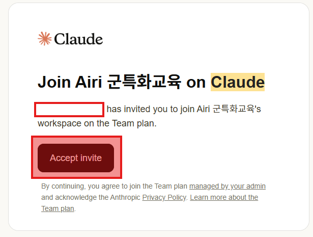
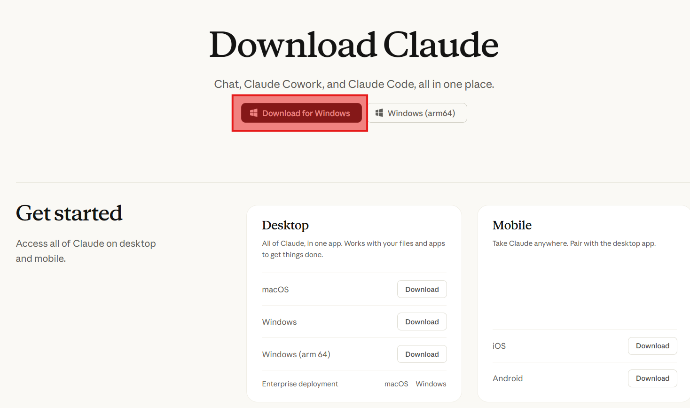
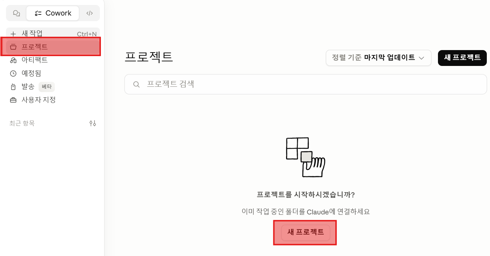
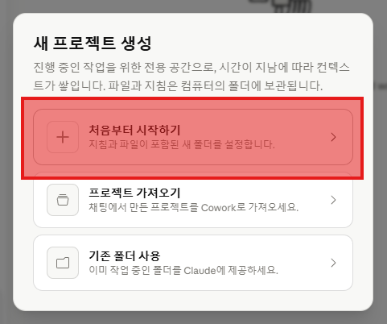
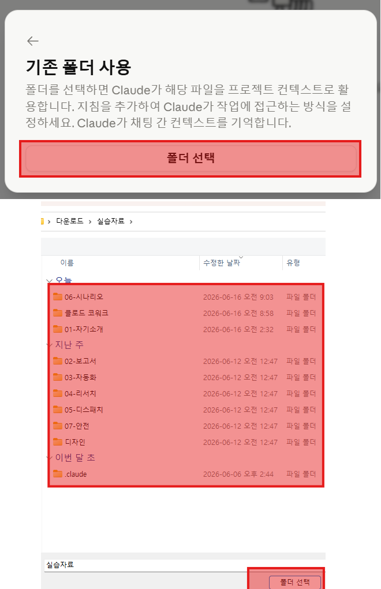
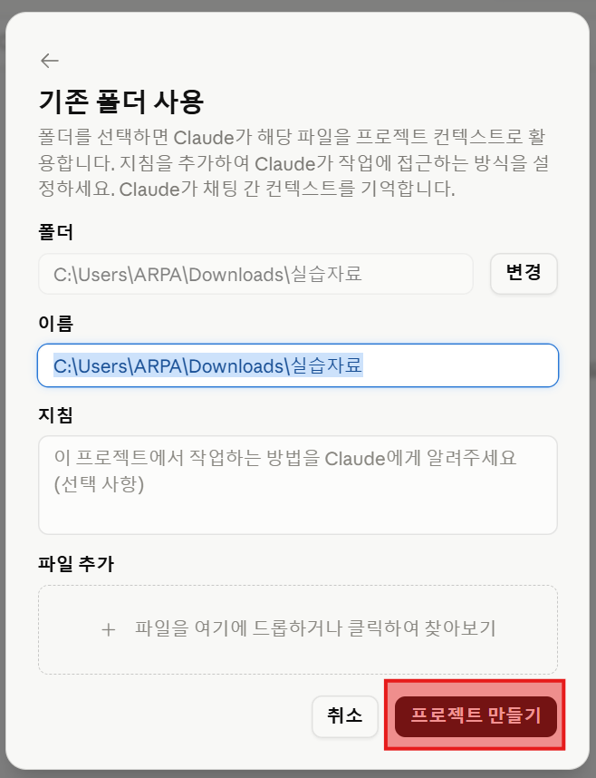

앱 하나로 끝,
Cowork로 만드는 하루
터미널도, 복잡한 설치도 없습니다. 데스크톱 앱 하나로 — 자기소개 페이지부터 보고서 자동생성, 업무 자동화, 검증된 리서치까지. 오늘 하루 직접 만들어 봅니다.
QR로 오픈채팅 입장 → 채팅방에 메일 주소를 남겨주세요.
제출한 메일로 Team 초대장이 갑니다. 시작과 함께 이어서 셋업합니다.
다섯 단계 — 만들기 → 위임 → 결정
자기소개 페이지 — 대화로 인터뷰 → HTML(웹페이지 파일) 한 장.
보고서·발표자료 — 한 원문 → PPT · Word · PDF.
내 업무 자동화 — 파일 정리·변환·요약·예약.
Dispatch — 폰으로 시키는 Cowork.
검증 리서치 팀 — 8명 분업 + 교차검증 보고서 (T4 위임 위에서).
안전하게 쓰기 — 캡스톤 — 9 패턴 + 9원칙으로 우리 팀에서 안전하게.
앞 단계가 빨리 끝난 분은 각 슬라이드의 도전 과제로 더 깊게. 8시간이 빠듯하게 채워지도록 설계됐습니다.
대화형 AI가 조언자라면 — 이건 실무자
기존 챗봇 — 똑똑한 조언자
"이렇게 하세요"라고 알려 주지만, 실제 일은 내가 합니다. 답을 받아 복사해서 직접 옮겨야 하죠. 내가 직접 답을 옮기던 시대.
Cowork — 똑똑한 실무자
Cowork(Claude 데스크톱 앱 안의 'AI에게 일 맡기기' 기능)는 내 컴퓨터의 파일과 폴더를 직접 열고, 만들고, 정리합니다. 결과물을 손에 쥐여 줍니다. AI에게 시키는 게 동료에게 부탁하는 것과 같은 의미가 됐다 — 그래서 내가 확인하고 OK하는 것의 의미도 같아진다.
도구의 변화가 아니라 — 위임 패턴의 변화.
Claude 모델 — 네 등급의 일꾼
Haiku
간단한 일을 가장 빠르고 저렴하게. 분류·요약·짧은 답.
Sonnet
속도와 똑똑뜻하는 바 균형. 일상 업무의 표준.
Opus
깊은 사고가 필요한 일. Cowork의 기본 모델 — 오늘 우리가 쓰는 그 일꾼.
Fable NEW
Opus 위의 새 등급 (2026.6 출시). 가장 어려운 문제를 스스로 깊이 생각해서. 유료 플랜에서 사용 가능.
오늘 실습은 기본 모델(Opus) 그대로면 충분합니다. 모델 이름이 보이면 "일꾼 등급이구나" 정도만 — 바꿀 일은 거의 없습니다.
시작 준비 — 앱 하나면 끝
세 단계만 따라오면 됩니다. 초대 · 설치 · 첫 실행. 천천히, 한 사람도 빠짐없이 함께 진행합니다. (메일 제출은 표지 안내대로 이미 끝났죠?)
초대장 수락 → Claude 로그인
메일함에서 초대장을 엽니다.
"수락(Accept)"을 누릅니다.
제출한 메일로 로그인합니다.
이제 같은 팀에서 함께 쓸 준비 끝.

초대장이 안 보이면 스팸함도 확인해 주세요. 메일이 영어여도 당황 금지 — "Accept" 버튼 하나만 누르면 됩니다. 로그인 중 6자리 인증코드 메일이 한 통 더 올 수 있어요 (그 숫자를 그대로 입력).
데스크톱 앱 설치 — 공식 사이트에서
claude.com/download 접속 (또는 claude.ai → 우상단 "Download").
본인 OS(Windows / macOS)에 맞는 설치 파일 받기.
받은 파일을 더블클릭해 설치 → 앱 열기 → STEP 1에서 받은 계정으로 로그인.

⚠️ 공식 출처만 — claude.com 또는 anthropic.com 외에서 받은 파일은 위험. 설치할 건 이 앱 하나뿐, 그 외 추가 프로그램은 필요 없습니다.
앱을 열고 — 워크스페이스를 준비한다
워크스페이스(오늘 쓸 실습 재료 폴더) 받기
채팅방의 실습자료.zip을 — 폰이 아니라 PC 브라우저로 채팅방에 들어가 받습니다 → 받은 파일에 오른쪽 클릭 → "압축 풀기". 여기까지만 — 이 폴더를 Cowork에 연결하는 건 다음 장(새 프로젝트)에서 합니다.
권한 — 꼭 기억할 것
Cowork은 이 폴더의 파일을 직접 다룹니다. 워크스페이스 폴더 안에서만 일하니 안전합니다. 중요한 원본 폴더는 절대 작업 폴더로 지정하지 마세요.
압축 푼 위치만 기억해 두세요 — 다음 장에서 바로 찾아갑니다. 바탕화면이 OneDrive 동기화 중인 PC라면 문서 폴더 권장(동기화 충돌 방지). 회사 PC에서 설치가 막히면 손 들어주세요.
Cowork에서 — 새 프로젝트 만들기

왼쪽 메뉴에서 시작
왼쪽 사이드바의 Projects를 클릭 → 화면 가운데 또는 오른쪽 위의 New project 버튼을 누릅니다.
프로젝트 = Cowork이 작업할 폴더 하나 + 대화·기억의 경계. 프로젝트가 바뀌면 이전 대화도, "기억해 둬" 한 것도 새로 시작입니다 — 그래서 오늘은 워크스페이스 전체로 하나만 만들고, 단계는 폴더만 옮겨가며 진행해요.
세 가지 중 — 기존 폴더 사용

세 번째 옵션 선택
세 가지 선택지가 나옵니다. 기존 폴더 사용을 누릅니다. 이미 받아 둔 실습자료 폴더를 그대로 작업 폴더로 지정합니다.
다른 두 옵션 — "처음부터 시작하기"는 빈 폴더를 새로 만들 때, "가져오기"는 이미 만들어 둔 프로젝트를 옮길 때 씁니다. 오늘은 받은 폴더를 그대로 쓰니까 세 번째.
두 단계 — 폴더 고르고, 만들기

① 실습자료 폴더 선택
받아 압축 푼 실습자료 폴더를 그대로 고르고 폴더 선택. 하위 폴더 말고 루트.

② 이름 확인 → 만들기
이름은 자동으로 채워집니다 (원하면 클로드 코워크 실습 같이 수정). 프로젝트 만들기 클릭.
오늘은 실습자료 전체를 한 프로젝트로 둡니다. 채점("채점해 줘")과 단계 간 파일 참조가 이 폴더 기준이라, 하위 폴더로 따로 만들면 안 됩니다. 단계 이동은 "이제 02-보고서 폴더에서 작업하자"라고 말하면 끝.
워크스페이스 — 단계별 재료 + 목표 + 채점
폴더 구성
01-자기소개/ ~ 05-안전/— T1~T5 단계별 재료- 각 폴더에
목표.md+도전과제/ .claude/skills/채점/— 채점 스킬디자인/·치트시트.md·다음30일.md
진행 방식 — 한 프로젝트, 단계 폴더 이동
프로젝트는 실습자료 루트 하나. "이제 02-보고서 폴더에서 작업하자"는 작업 컨텍스트만 옮기는 것 — 이전 단계 결과물(예: 01-자기소개/자기소개.html)은 언제든 자유롭게 참조 가능. 그래서 T2 발표자료가 T1 자기소개를 그대로 가져다 씁니다.
결과물을 만든 뒤 "채점해 줘"라고 말하면 — 점수표(채점결과.md)가 해당 폴더에 생깁니다. 단, 다음 슬라이드의 첫 메시지로 스킬을 한 번 인식시킨 다음부터.
세션 시작 한 번 — 스킬 + 흐름 인식시키기
⭐ 이 한 번이 핵심
한 번 시키면 — 이후 "채점해 줘" 한 마디로 작동하고, T1→T2→… 넘어갈 때 흐름도 인식. 복사 → 첫 메시지로 그대로 보내기.
안녕! 시작 전에 기억해 둘 것 두 가지. 1) .claude/skills/채점/SKILL.md 와 기준/T1~T5.md 를 모두 읽어 둬. "채점해 줘", "도전 N 채점해 줘" 같은 요청은 SKILL.md 절차대로. 2) 실습자료 루트 전체가 하나의 프로젝트야. 단계 폴더 이동은 컨텍스트만 옮기는 것 — 이전 단계 결과물(예: 01-자기소개/자기소개.html)은 자유롭게 읽어 와.
⚠️ 첫 대화에서 폴더 접근을 허용한 순간 — 그 폴더 모든 파일이 AI에 노출. 작업 폴더는 항상 "공개해도 되는" 파일만 (워크스페이스가 그래서 안전).
이제 — 첫 결과물을 만들 차례
앱이 열렸고, 폴더를 골랐고, 말도 걸어 봤습니다. 다음 단계에서 나를 소개하는 진짜 웹페이지를 만들어 봅니다.